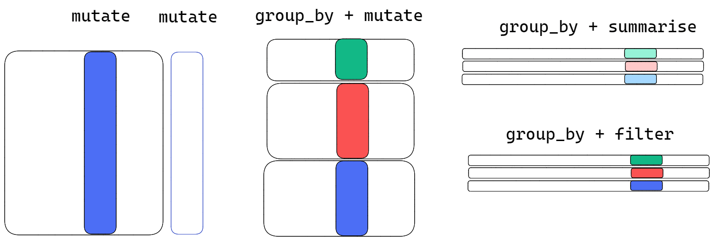

data.frame(x=letters) %>%
filter(x%in%c('a','b'))
data.frame(x=letters) %>%
filter(c('a','b')%in%x)
c('a','b')%in%letters
letters%in%c('a','b')Week6: Grain development III
R-intermediate
Welcome to the sixth course! You will learn more about dataframe wrangling:
Learning goals
- data frame wrangling with
dplyr ggplot()
Discussion
- What is the component of
function()? How could you document them? - How many data type can you remember?
- How many ways could you match a cell in
dataframe? which functions are available? - What is the function of
mutate(),filter()andselect()? (dplyr) 4.5 If you have multiple options in these function, what operator should you use for separation? 4.6 what is the meaning of,infilter(condition1, condition2)? - What are the elements of
ggplot() - What are
|,&,!,==and%in%? When to use them? - How do you have an overview of a
dataframe? Which function can you use? - If you want to combine two columns into one, how many ways are available?
To match the pattern,how the order before or after %in% matters?
advanced mutate add-on :across
apply function for multiple columns
across( column_name (e.g., "y") or column_position (e.g., 2),FUNCTION)
FUNCTION examples
function(x){x +1}
syntax: ~{.x+1}
function(x){mean(x, ...)}
syntax: ~{mean(.x,...)}
... means the additional option other than the first input argument. For example, ... could be na.rm=True.
Now here is one example of applying function to multiple columns
climate %>%
select(ends_with("Temperature")) %>%
head(.,3) %>%
glimpse()
climate %>%
mutate(across(where(is.numeric),~{round(.x, digits = 2)})) %>%
# mutate(across(where(is.numeric),function(x){round(x, digits = 2)})) %>%
select(ends_with("Temperature")) %>%
head(.,3) %>%
glimpse()
# reduce your code chunk by using function
display <- function(x){
# subset dataframe and summarized for displaying purporse
# x: input data frame
x %>%
dplyr::select(ends_with("Temperature")) %>%
head(.,3) %>%
dplyr::glimpse()
}
climate %>%
mutate(across(where(is.numeric),function(x){round(x, digits = 2)})) %>%
display()Conclude your dataframe by groups

group_by()
Learn from examples!
practice
- read
climate.csvfromdatafolder using relative path and name it asclimate. - find the sowing date (i.e., the first date) for each year (
DFG_year) and each sowing treatment(sowing_date) from .
climate_sub <- climate %>%
dplyr::select(DayTime,DailyMean_Temperature,DFG_year,sowing_date)- calculate thermal time based on
DailyMean_Temperaturefromclimate_sub
click for answer
thermal_time <- climate_sub%>%
group_by(DFG_year,sowing_date) %>%
mutate(DayTime=as.Date(DayTime,format="%Y-%m-%d")) %>%
arrange(DayTime) %>%
mutate(ACC=cumsum(DailyMean_Temperature))
# check with
library(ggplot2)
merge_thermal_time <- thermal_time%>%
merge(.,climate %>%
select(DayTime,DFG_year,sowing_date,Acc_Temperature))
merge_thermal_time %>%
ggplot(.,aes(x=ACC,y=Acc_Temperature))+
geom_point(shape=0,size=.5,alpha=.5)+
geom_abline(intercept=0)+
facet_grid(sowing_date~DFG_year)